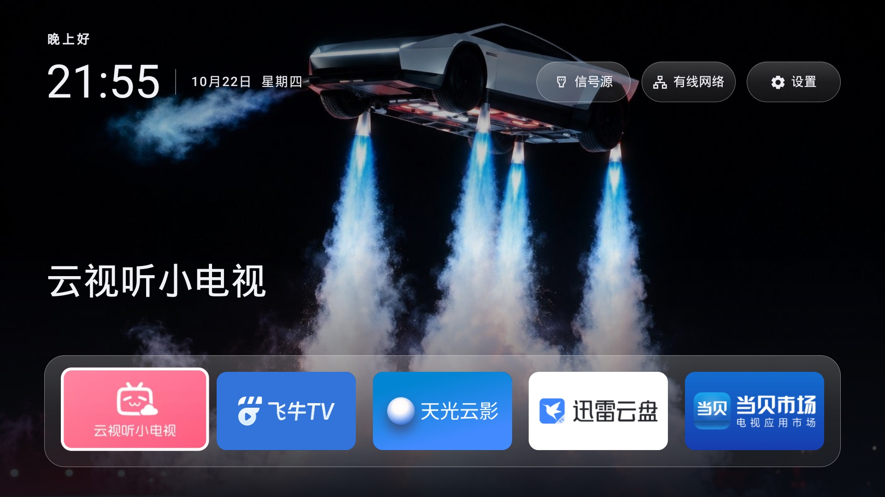

你的电视，全新开始。
没有广告，没有推荐流。
打开电视，只看见你想看的。

无需 root保留原桌面本地使用
开始安装。
电脑与电视，连接同一网络。
第一步
开启 ADB 调试
设置 → 设备偏好设置 → 关于 → 内部版本号
连续按确定约 7 次，在开发者选项中打开 USB / ADB 调试。
通用入口参考，菜单以实际型号和固件为准。
第二步
你的电视，全新开始。

电脑与电视，连接同一网络。
设置 → 设备偏好设置 → 关于 → 内部版本号
连续按确定约 7 次，在开发者选项中打开 USB / ADB 调试。
通用入口参考，菜单以实际型号和固件为准。